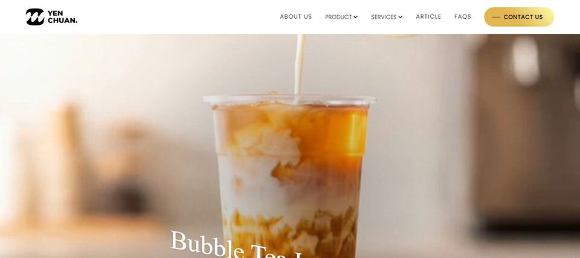
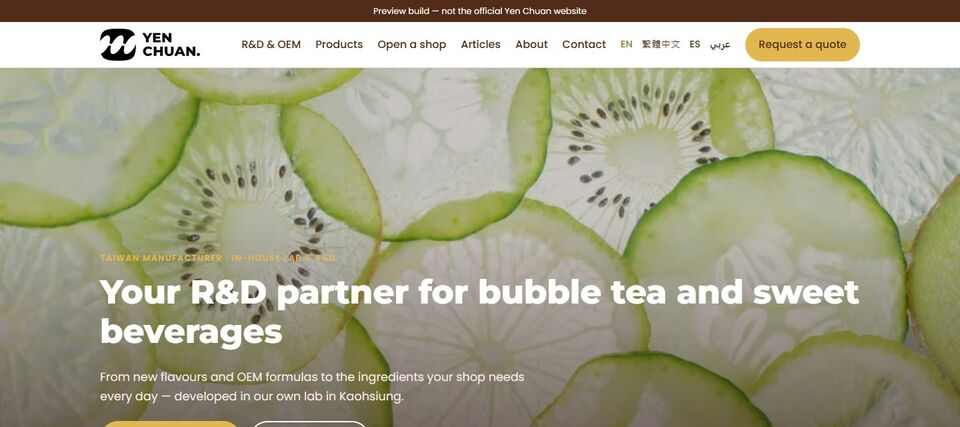

先看一個官網小成果
手機點開飲品做法，看得到用料與配方入口。
看手機做法示範打開第一張開心果飲品卡，點「查看製作方式」。方便時試一次，回覆「看得到用料」，或指出卡住的一步即可。
這是試作，不是正式官網。這次只確認這個小成果，不是核可整站設計；不用先交帳號或填完整需求。
我們先交
可直接試的小成果，先由我們確認能用。
公司只看一件
點一次，確認這一步是否順手；不要求一次整理全部需求。
只修一處，再確認
有具體回饋就先處理那一處，再往下一步。
這個小成果改了什麼
原手機畫面點了不會展開；試作第一張飲品卡可展開原料，並連到完整配方（英文原文）。本輪不是新的速度或收益測試。


後續需求怎麼安排
公司先內部討論，再選一處具體需求交回做demo；本輪不代公司決定整站範圍、交期或費用採用。既定的研發定位、合站與語言方向不用重選。
Amazon公開策略可繼續分析；正式代營運、真實回信、金流與正式站修改都還未接通或執行。需要實際操作時，再安排合法權限與當批核可。
沒有回覆不當作同意。不要求公司幫忙完整測站，也不把這次功能確認當成後續購買承諾。
完整資料與原方案備查
原資料保留供查閱，不是本週交辦。舊時程、目標或原費用不能視為本輪已採用或自動起算；以各頁更新說明為準。

